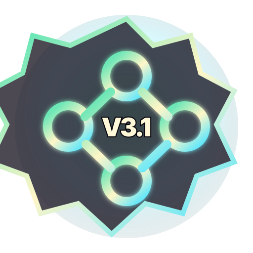

Door 03 · Routing Puzzle
Veyra3.1: DNS Dominion
Build a live traffic route from domain to origin while avoiding latency hazards. This game is part of SkyeArcade: Sovereign Vault, a ten-game browser arcade with local saves, achievements, level packs, bosses, cosmetics, run history, Crown Trials, and PWA install support.
No account requiredLocal progressionRouting Puzzle

Why play Veyra3.1: DNS Dominion?
Veyra3.1: DNS Dominion gives the vault a dedicated routing puzzle lane. It is built for fast browser play, clear objectives, and return-session progression without a mandatory login wall.
Launch the full SkyeArcade app to play this game, earn achievements, improve local records, test difficulty tiers, unlock cosmetics, and push toward Crown Trial completion.